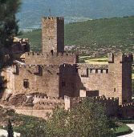
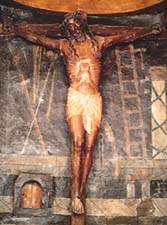
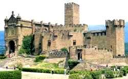
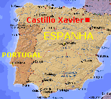
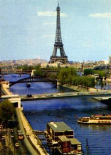
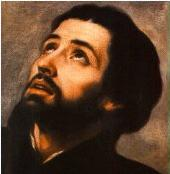

Francisco Jasso D'Azpilcueta y Javier
nasceu na localidade de Castillo Xavier, no 
O Castelo de seus pais tinha uma Capela onde Xavier rezava diante da imagem de um grande crucifixo, que segundo afirmam os seus hagiógrafos, aquele CRISTO suou sangue quando ele agonizava e morreu. A imagem foi esculpida em madeira e é um pouco maior que o tamanho natural de um homem, mostrando um suave sorriso na face.

Os Javier reconstruÃram e aumentaram
a Igreja do povoado. Junto da Igreja construÃram uma Abadia, onde viviam em
Comunidade: um Vigário, dois prelados, um servente e um estudante. A Missa
era celebrada diariamente: aos sábados em honra de Nossa Senhora; segunda-feira
era celebrada pelos defuntos; aos domingos e feriados a Missa era solene. Xavier
participava dessas Celebrações. Na Igreja tinha uma imagem de Nossa Senhora que
era a padroeira da Vila e por isso mesmo era chamada de NOSSA SENHORA DE
XAVIER. Era uma escultura do século XIII na qual Nossa Senhora está sentada
com o Menino Jesus nos braços. Por ordem dos senhores do castelo, as pessoas
deviam cantar ou rezar a “Salve Rainhaâ€
em todas as solenidades de preceito. Na seqüência dos
anos, determinaram que o canto fosse diário, assim que tocasse o
sino do castelo. 
O terreno dos Xavier era grande e de tal forma situado, que as estradas tinham que atravessá-lo. Naquela época os rebanhos de ovelhas e de gado, assim como o preparo de queijos, constituÃam à base da economia local. Os rebanhos de outros senhores e dos vizinhos, forçosamente tinham que passar pelo terreno do castelo para alcançarem a Vila ou seguirem para outras localidades. Eles vinham por trás dos montes, das montanhas e pela ribeira. Por essa razão a famÃlia Xavier instituiu uma taxa a tÃtulo de indenização, pelo pasto que os animais comiam e danificavam, na base de 5 soldos por um cordeiro. Entretanto, se tentassem passar de contrabando, não querendo pagar a mencionada taxa, os rebanhos eram confiscados pelos senhores do castelo e só eram liberados pelo pagamento de uma indenização de uma ovelha por cada cinco (5) que tentassem passar indevidamente.
Uma vez quando Xavier tinha 13 anos de idade, presenciou quando passaram diversos rebanhos de contrabando. Mas o guarda e seus dois irmãos, que estavam vigilantes no castelo, correram atrás e os fizeram voltar. O guarda reteve 300 ovelhas que correspondiam à indenização. Todavia, em face de um entendimento amistoso, só foram retidas cinco (5) ovelhas.
Em 1516, o relacionamento entre Navarra
e Castilla 
A CAMINHO DE PARIS

COLÉGIO DE SANTA BÃRBARA
Xavier ficou no Colégio de Santa Bárbara
que era protegido pelo Rei de Portugal. Deixou o traje de aristocrata e vestiu a
roupa de universitário. Professores e alunos levantavam às 4 horas da manhã. Eram
acordados por um jovem com uma sineta na mão, que percorria todos os dormitórios.
Depois de rezar as orações matinais iam para as salas de aula, iluminadas pela luz
de candelabros. A primeira aula começava às 5 horas. Todos se assentavam no
chão que era forrado com palha no inverno e feno fresco no verão. Em continuação,
os estudantes iam para a Santa Missa e depois para o café da manhã no refeitório.
Aos estudantes mais jovens serviam para comer um pãozinho, um copo com água,

As Terças-feiras e Quintas-feiras os estudantes descansavam. Eram conduzidos a uma ilha no rio Sena para praticarem esportes. Xavier era um dos campeões. Todos os professores levavam um bastão para castigar os estudantes que não quisessem participar. Em algumas oportunidades este tipo de procedimento suscitou até rebelião por parte de alguns alunos.
Conheceu Pedro Fabro, um jovem admirável! Tinha sido pastor de ovelhas nas montanhas e aos 12 anos de idade fez o voto de castidade. Respeitava e amava o SENHOR e sempre estava disponÃvel para tecer um filial e carinhoso comentário sobre nossa MÃE SANTÃSSIMA. Xavier teve a sorte de se hospedar com ele no mesmo quarto. E este acontecimento foi providencial, porque o gênio tranqüilo de Fabro livrou Xavier com seu gênio impulsivo, de graves perigos. Isto porque, com Ãndole independente, Xavier fugia do Colégio à noite em companhia de outros companheiros, em busca de aventuras. Anos mais tarde ele mesmo revelou: “Inocentes aventuras de rapazes, sem qualquer conseqüência, porque na realidade ele nunca tinha pecado contra a castidadeâ€.
Ainda em Santa Bárbara andava um antipático estudante de nome Calvino, muito falante e cheio de novidades, que estava contagiando muitos alunos com heresias contra a religião. Este era o mesmo Calvino que mais tarde, ajudou a implantar a Reforma Protestante na Europa.